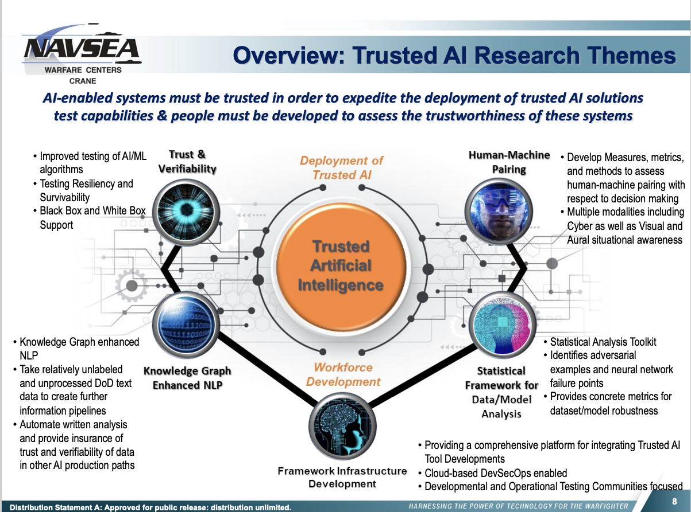

If you have stumbled on this post, it is still in the rough draft state and under major revision.
1 Introduction and Context of Trusted AI (TAI)
In an age where Artificial Intelligence (AI) is advancing at an unprecedented pace, trust in these intelligent systems is paramount—especially within the context of military operations. Welcome to a reflection on the Trusted AI (TAI) Frameworks Project, a collaborative initiative between Indiana University, University of Notre Dame, and CRANE Naval Surface Warfare Center as part of Scalable Asymmetric Lifecycle Engagement (SCALE) led by Purdue University. Our mission is to enhance the successful and trusted deployment of AI to the Navy and Marine Corps and fortify the trust that humans have when interacting with these systems.
The TAI Frameworks Project started modestly, aiming to provide a potential integration point for outputs from other TAI projects. It sought to inform the Navy in deployment decisions but has since grown and evolved. At the core of this endeavor are the six dimensions of trust in AI:
- Explainability: Making the logic and reasoning behind AI decisions transparent.
- Safety and Robustness: Ensuring that AI operates reliably under different conditions.
- Non-discrimination and Fairness: Guaranteeing that AI does not favor or prejudice against particular groups.
- Privacy: Protecting individual’s information and rights.
- Environmental Sustainability: Recognizing the ecological footprint of AI systems.
- Accountability and Audibility: Holding AI and its developers responsible for decisions and actions.
Each of these dimensions resonates with different stages of the AI lifecycle, including Data Collection, Data Preparation, Feature Extraction, Training, Testing, and Inference, and is aligned with the AI CI/CD of Development, Use, Analysis, and Re-Design.
Reflection on the Framework Project
As we look back on the past years, we see an ever-evolving project that has adapted to the rapidly evolving landscape of Artificial Intelligence research and products. The integration of trust dimensions into our framework’s components, tools, and methodologies has shaped a solution aligned with the Navy’s mission. Furthermore, we have explored broader themes like ethical considerations, workforce development, and community involvement, highlighting the multifaceted nature of our approach to trusted AI. This is end of my first year as PI of the project after taking over from Prof. Jarek Nabrzyski who helmed the first year of the project with Prof. Chris Sweet and myself. The project was originally proposed by Prof. Ian Taylor, who went on leave from the CRC as the project was beginning that led to Prof. Jarek Nabrzyski to step in and provide leadership as PI. The direction of the project has changed since the acceptance of the initial proposal as a funded project, but many of the ideas and components of the proposal have remained. Work on evaluating and understanding the challanges and potential solutions to deploying AI technologies in the Navy, as well as capturing and understanding academic AI research outputs fell to Research Programmer Dr. James Sweet who spent time reviewing and understanding solutions that were being developed as open source projects and applied in industry to solve some of the challanges with “AIOps.” Additionally we had some help in creating some simple examples for using the Frameworks and starting the process of thinking about metadata for Trusted AI from Prof. Don Brower who came to the CRC last year from the Notre Dame Hesburgh Libraries. In year 2. we were joined by Prof. Paul Brenner, who has vast expeience with compute infrastructure and engineering in the military context. We were also joined by several UND undergraduate students Peter Ainsworth, Nicholas Clark and Daniel Weldon who created documentation, tutorials and “kicked the tires” on some of the Framework components in as part of the “AI Application” development process. We also had three students, Daniel Weldon, William Shephard, Samantha Nagel looking at existing cloud platforms and infrastructure in use by the DoD and attempting to containerize AI applications based on Pytorch to understand the complexity and barriers to AI applications in the DoD cloud.
Framework components go here…
Community Engagement and Collaboration
TPOCS, Other TAI projects, IU go here. Informing broader DoD workforce development efforts.
Our journey has emphasized collaboration, dialogue, and shared learning. By leveraging existing tools and methodologies and engaging in broader community efforts, we have fostered an environment where knowledge is not just consumed but also contributed.

Looking Ahead and Future Vision
As we move forward, our commitment to continuous alignment with trust dimensions and evolving methodologies remains steadfast. Our reflection on achievements and lessons learned will be a guiding light, illuminating the path towards future developments in trusted AI.
2 Building a Foundation for Trusted AI
2.1 Software 1.0 vs Software 2.0: Building Trust from the Ground Up
The evolution from “Software 1.0” to “Software 2.0,” as popularized by Andrej Karpathy (Karpathy 2017), represents a paradigm shift in how we develop and deploy software systems.
Software 1.0 is characterized by deterministic, programmed behavior where engineers write explicit code to define how a system should operate. It’s a method where rules are meticulously crafted, and the outcome is predictable, given a specific set of inputs.
Software 2.0, in contrast, signifies learned behavior where models are trained on data to infer the underlying patterns. Unlike the rigid rules of Software 1.0, Software 2.0 can handle immense complexity, learning from examples to generalize and adapt to new situations. This ability to process and respond to intricate, multi-dimensional inputs sets Software 2.0 apart, opening doors to applications previously thought unfeasible.
The implications of Software 2.0 are profound for sectors that face highly complex and dynamic environments, such as those present in Navy operations. Where traditional rule-based systems may falter or become unwieldy, Software 2.0 offers the flexibility and adaptability to respond to ever-changing scenarios. Its capacity to absorb and interpret vast amounts of information in real-time provides a powerful tool in navigation, threat assessment, strategy formulation, and more. For the Navy, it enables a more resilient, intelligent, and agile approach to both strategic planning and operational execution.
However, the promise of Software 2.0 doesn’t diminish the importance of Trusted “Software 1.0” as the foundation. Stability, predictability, and reliability remain essential, and the Trusted AI Frameworks Project recognizes the symbiotic relationship between these two paradigms. Trusted “Software 1.0” forms the stable base, while Trusted “Software 2.0” enables more dynamic and complex solutions.
The interplay between these two layers presents exciting opportunities and challenges, requiring rigorous validation, ethical considerations, and collaboration to ensure responsible deployment. It’s a multifaceted challenge that intertwines technology, ethics, collaboration, and vision, reflecting the complex reality of modern warfare and strategic planning.
2.2 GitOps and AI Engineering: Collaborative Practices for Success
In the transition from “Software 1.0” to “Software 2.0,” where complexity and adaptability take center stage, the underlying practices that ensure quality and trust must also evolve. GitOps and collaborative environments like GitHub have emerged as essential tools in this transformation.
2.2.1 What is GitOps?
GitOps is a methodology that applies Git’s version control principles to the entire infrastructure and development lifecycle. By treating everything as code, including infrastructure and configuration, GitOps enables robust version control, audit trails, and collaboration. Changes are made in the Git repository, and automated systems ensure that the live environment aligns with the defined code state.
2.2.2 Importance in Traditional and AI Engineering
Traditional Software Engineering: In the context of “Software 1.0,” GitOps brings consistency, traceability, and collaboration. It provides a unified platform where the entire development team can work together, tracking changes, rolling back when necessary, and maintaining a clear history of modifications. This shared workspace enhances communication, accelerates development, and minimizes the risk of errors.
AI Engineering: The shift to “Software 2.0” introduces new complexities and dependencies. GitOps adapts to these challenges by offering a flexible and responsive platform that can manage intricate workflows, diverse data sets, and multi-dimensional models. The collaborative nature of platforms like GitHub fosters cross-functional engagement, leveraging collective expertise to scrutinize, enhance, and validate AI models.
2.2.3 Enhancing Trust and Quality
By embracing GitOps, projects can benefit from continuous integration, testing, and deployment. This CI/CD methodology promotes a culture of ongoing evaluation and refinement, where each change undergoes rigorous scrutiny. This process not only ensures quality but also builds trust, as stakeholders have transparent visibility into how decisions are made and how the software evolves.
For the Navy, where trust and reliability are paramount, this transparent, collaborative approach aligns with the ethos of responsibility and accountability. By implementing GitOps within the Trusted AI Frameworks Project, the partners foster an environment conducive to innovation, quality, and ethical considerations.
2.3 CI/CD in Trusted AI: Ensuring Continuous Quality
Continuous Integration/Continuous Deployment (CI/CD) is not a new concept in software development. Still, its application within the realm of AI and “Software 2.0” introduces unique opportunities and challenges. With AI’s rapid evolution and the growing prominence of foundation models and transfer learning, CI/CD becomes a vital component in maintaining quality, transparency, and trust.
2.3.1 Applying CI/CD to AI “Software 2.0”
Foundation Models: These are large-scale pre-trained models that serve as a base for specialized adaptations. By understanding intricate patterns in extensive data sets, foundation models can be fine-tuned for various tasks, enabling more rapid development and deployment.
Transfer Learning Methodology: This approach leverages existing pre-trained models (often foundation models) and adapts them to specific tasks or domains. It allows for quicker iterations, conserves resources, and enhances performance on specialized tasks.
Incorporating CI/CD into these AI practices ensures that as models are adapted and evolve, they continue to meet quality standards and align with ethical considerations. It promotes a transparent process, where every modification, every decision, can be traced and validated.
2.3.2 Building Trust and Transparency
Rapid Integration and Evolution: With AI’s pace, a responsive CI/CD pipeline is essential. Models are constantly refined, adapted, and expanded. Ensuring that these changes are integrated smoothly, without compromising quality, is key to building trust.
Ethical Considerations: Transparency in the AI development process is more than a technical requirement; it’s an ethical obligation. A well-designed CI/CD process provides clear visibility into the workings of AI models, supporting responsible decision-making and accountability.
2.3.3 “Data Engines” in AI CI/CD
The innovative concept of “Data Engines” in AI CI/CD refers to an intelligent, integrated system that orchestrates various stages of AI development, from data collection to model deployment.
Components and Functionality: A Data Engine incorporates real-time data ingestion, preprocessing, feature engineering, model training, evaluation, acceptance testing, and deployment. It serves as the backbone, ensuring that models adapt, learn, and evolve in alignment with real-world complexities and requirements.
Real-World Example: Tesla’s Data Engine Pipeline: Tesla’s self-driving technology leverages a Data Engine that continually feeds information from vehicles on the road into its AI models. This pipeline manages vast quantities of data, refines features, adapts models, and deploys updates, all in an iterative and seamless manner. This example illustrates how Data Engines can handle the dynamism and complexity inherent in modern AI systems.
Challenges and Solutions: Integrating a Data Engine within the AI CI/CD process is not without challenges. These may include ensuring data quality, scalability, adherence to ethical guidelines, and more. Innovative solutions and best practices, informed by real-world applications like Tesla’s, are instrumental in navigating these challenges successfully.
The integration of “Data Engines” within the AI CI/CD process marks a critical advancement in how we develop, deploy, and trust AI. For the Navy and the Trusted AI Frameworks Project, it signifies a forward-thinking approach that recognizes the dynamism of modern AI while steadfastly upholding quality and ethical principles.
2.4 Ethical Considerations in Testing: Beyond Functionality
As we endeavor to create AI systems that interact with complex environments and human lives, the ethical implications of their behavior cannot be ignored. While traditional CI/CD GitOps environments are tailored to ensure functionality, quality, and performance, the nature of AI — particularly “Software 2.0” — necessitates a broader and more profound testing approach. This extends into the ethical realm, considering how the AI system behaves in various scenarios and aligns with societal values.
2.4.1 Integrating Ethical Behavior Tests in AI CI/CD GitOps Environments
Adapting Traditional Environments: Conventional CI/CD GitOps practices were not initially designed to handle the ethical complexities of AI systems. Integration of ethical behavior tests within these environments requires thoughtful adaptation and innovation to ensure that AI models align with ethical standards alongside technical requirements.
Ethical “Behavior Tests”: These are specialized tests designed to evaluate AI models in various scenarios, considering ethical principles like fairness, accountability, transparency, and safety. They are critical in building trust and ensuring that AI systems function not only effectively but ethically.
Challenges with the “Data Engine” Concept: The real-time and continuous nature of Data Engines presents unique ethical challenges. How data is sourced, processed, and utilized within the engine has implications for privacy, bias, quality, and more. Ethical behavior tests must extend into this realm, evaluating the entire pipeline, including the Data Engine’s operations.
2.4.3 Conclusion: Building a Foundation of Trust and Responsibility in AI Development
The journey from “Software 1.0” to “Software 2.0” is more than a technological leap; it represents a shift in understanding and responsibility. As AI models grow more complex and intertwined with real-world applications, the demands on software engineering practices also evolve. The traditional foundations of trust and quality assurance in software development have had to adapt to new challenges posed by AI.
In this section, we’ve explored how concepts like GitOps and CI/CD practices must be reimagined to align with the unique characteristics of AI engineering. We delved into the creation of Data Engines, recognizing their potential in handling complex environments and real-world data but also acknowledging the ethical considerations they introduce.
We recognized that the ethical imperatives in AI go beyond mere functionality, requiring integrated ethical behavior tests, interdisciplinary collaboration, and a comprehensive ethical framework. This is especially pertinent for organizations like the Navy and Marine Corps, where the implications of AI behavior have profound and immediate impacts.
The synthesis of these concepts paints a picture of a rapidly changing landscape, one where the lines between traditional software engineering and AI development are blurring. It’s a landscape filled with opportunities, innovations, and new horizons, but also one that demands caution, foresight, and a steadfast commitment to ethical principles.
This foundation sets the stage for our subsequent exploration, where we’ll continue to dive into the intricacies of trusted AI, from data-centric methodologies to hardened containers and workforce development. As we journey through this complex terrain, the underlying theme of trust and ethical alignment remains our guiding star, illuminating the path toward responsible and successful AI deployment.
3 Managing and Utilizing Data
3.1 Data Centric AI for Trusted AI
In traditional AI development, much attention is often given to fine-tuning model architectures, experimenting with different layers, activation functions, and optimization algorithms. While this approach has driven many innovations, it may sometimes overlook the central role of data in AI success.
A paradigm shift is emerging, championed by AI leaders like Andrew Ng through the Data Centric AI movement. This movement emphasizes the need to invest more in the quality and context of the data rather than continually fine-tuning the model architecture. The MIT Introduction to Data-Centric AI course provides a very good introduction to Data Centric AI methodology that the Frameworks aim to enable.
The logic behind this shift is profound yet straightforward. Models, irrespective of their complexity, are only as good as the data they learn from. By prioritizing data quality, encompassing aspects such as cleanliness, relevance, diversity, and contextual richness, AI systems can achieve better performance with potentially simpler architectures.
This data-centric approach aligns well with the requirements of organizations like the Navy and Marine Corps. In complex environments where variability and uncertainty are common, the depth and quality of data can make a significant difference. A well-annotated dataset that captures the intricacies of real-world scenarios allows AI models to learn more effectively and generalize better to unseen situations.
For the Trusted AI (TAI) Frameworks Project, a data-centric philosophy serves as an essential cornerstone, recognizing that robust data management practices can lead to more reliable, interpretable, and trusted AI systems. This perspective does not diminish the value of innovative modeling but places it in the context of a balanced and well-considered AI development strategy, where data and model work in harmony.
The data-centric approach is not just a technical reorientation; it’s a recalibration of AI development’s very essence, placing data at the heart of the innovation process. The implications for trusted AI are profound, offering a path to AI systems that are not only highly capable but also aligned with the nuanced requirements and ethical considerations that define the evolving landscape of AI in military and civil applications.
3.2 DoD Data Strategy: Aligning with National Defense Goal
The Department of Defense’s (DoD) Data Strategy emphasizes the critical role that data plays in achieving the goals of the National Defense Strategy:
- Make Data Visible – Consumers can locate the needed data.
- Make Data Accessible – Consumers can retrieve the data.
- Make Data Understandable – Consumers can recognize the content, context, and applicability.
- Make Data Linked – Consumers can exploit data elements through innate relationships.
- Make Data Trustworthy – Consumers can be confident in all aspects of data for decision-making.
- Make Data Interoperable – Consumers have a common representation comprehension of data.
- Make Data Secure – Consumers know that data is protected from unauthorized use/manipulation.
The TAI Frameworks Project highlights its commitment to a data-centric approach to trusted AI. Each goal resonates with our overarching mission:
Visible: Ensuring that data is discoverable by those who need it fosters transparency and helps build a foundation of trust in AI systems.
Accessible: Making data readily available to authorized users enhances the efficiency and effectiveness of AI, providing the right information at the right time.
Understandable: Clear documentation and metadata contribute to the explainability of AI, a core dimension of trust.
Linked: Connecting related data sets facilitates more coherent AI analysis, ensuring robustness and reliability in decision-making.
Trustworthy: Maintaining the integrity and quality of data ensures that AI systems are dependable, echoing the Trustworthy dimension in our trust framework.
Interoperable: Enabling data to be used across different systems and platforms fosters collaboration and integration, key aspects of our community engagement efforts.
Secure: Implementing strong data security measures safeguards privacy and aligns with the ethical considerations central to trusted AI.
This alignment with the DoD’s data goals underscores the importance of a data-centric approach in our work. By recognizing data as a strategic asset and prioritizing these seven goals, we are nurturing an environment where trusted AI can flourish, complementing the “Data-Centric AI for Trusted AI” section that follows.
3.3 Selection of Data Version Control (DVC) for Tracking Data and Experiments
Managing and tracking data and experiments is a critical task in the AI development lifecycle. Traditional version control systems are well-suited to handle code, but they often fall short when dealing with the unique requirements of large-scale data. In the context of AI, this limitation can hinder the collaboration and reproducibility that are vital to building trusted systems.
Data Version Control (DVC) emerges as a compelling solution to address these challenges, and its selection in the Trusted AI (TAI) Frameworks Project highlights its inherent advantages. Here’s an exploration of why DVC stands apart from other data management systems:
Integration with GitOps: DVC extends Git’s functionality to handle large data files without storing them in the Git repository. It uses pointers in the repository, keeping the actual data in a remote location. This approach aligns with GitOps practices, allowing developers to manage data with the same tools and workflows they use for code, promoting a more streamlined and unified process.
Open Source Nature: DVC is an open-source project, fostering a community-driven approach that aligns with the values of collaboration, transparency, and accessibility. This aspect encourages active participation from a wide range of contributors, leading to rapid innovations and responsive support.
Compatibility with CI/CD and GitHub: DVC’s architecture is designed to work seamlessly within CI/CD pipelines, and its compatibility with GitHub Actions enables automated workflows that cover everything from data preprocessing to model training and evaluation. This integration ensures that data handling is not a separate silo but an integral part of the continuous integration, testing, and deployment processes.
Data Tracking and Experiment Versioning: Unlike traditional data management systems, DVC provides robust capabilities to track changes in data and experiments, much like how code is versioned. It enables the ability to revert to previous data states, compare different data versions, and align data changes with specific code revisions. This ensures that every step in the AI development process can be audited and replicated, contributing to greater trust and transparency.
Facilitating Collaboration: DVC’s decentralized structure and remote storage options enable teams to share and access data without overwhelming the repository. This encourages collaboration, even in distributed environments, ensuring that everyone can work on the same data version and maintain consistency across the development lifecycle.
Flexible Storage Options: DVC offers flexibility in storing data, supporting various remote storage backends like S3, Azure Blob, Google Cloud Storage, among others. This flexibility aligns with different organizational needs and preferences, ensuring that data management is adaptable to various scenarios.
The selection of DVC in the TAI Frameworks Project represents a thoughtful alignment with the principles of trusted AI, GitOps, and open-source collaboration. By bridging the gap between traditional software engineering practices and the unique demands of AI data management, DVC supports the creation of AI systems that are not only performant but also transparent, replicable, and ethical.
Add information about MLFlow and other tools evaluated in this section.
3.4 Ethical Considerations and Trust in Data Management: The Navy’s Mission and Guiding Principles
In alignment with the Navy’s strategic goals and the specific executive orders governing the Department of Defense (DoD), ethical considerations and trust in data management hold a central place in the Trusted AI Frameworks Project. By prioritizing metadata, adhering to the FAIR (Findable, Accessible, Interoperable, and Reusable) and CARE (Collective Benefit, Authority to Control, Responsibility, and Ethics) principles, the Navy reinforces its commitment to mission-critical values of transparency, integrity, and accountability. It should be noted that application of FAIR and CARE principles are separate from the notion of “Open Data” and doesn’t invalidate the use of proper access and authorization controls.
3.4.1 Metadata and Its Role in Ethical Data Management
- Transparency for Mission Success: Metadata supports the Navy’s operational efficiency by providing clarity on data origins, context, and constraints, thereby enabling informed decision-making.
- Compliance with Executive Orders: Metadata ensures alignment with legal and regulatory requirements, such as the DOD AI Ethical Principles (Department of Defense 2020), which mandates specific data handling protocols within the DoD and specifically:
- Responsible. DoD personnel will exercise appropriate levels of judgment and care, while remaining responsible for the development, deployment, and use of AI capabilities.
- Equitable. The Department will take deliberate steps to minimize unintended bias in AI capabilities.
- Traceable. The Department’s AI capabilities will be developed and deployed such that relevant personnel possess an appropriate understanding of the technology, development processes, and operational methods applicable to AI capabilities, including with transparent and auditable methodologies, data sources, and design procedure and documentation.
- Reliable. The Department’s AI capabilities will have explicit, well-defined uses, and the safety, security, and effectiveness of such capabilities will be subject to testing and assurance within those defined uses across their entire life-cycles.
- Governable. The Department will design and engineer AI capabilities to fulfill their intended functions while possessing the ability to detect and avoid unintended consequences, and the ability to disengage or deactivate deployed systems that demonstrate unintended behavior.
3.4.2 The FAIR Principles: Ensuring Naval Readiness
- Findable & Accessible: Easy discovery and retrieval of data accelerate the Navy’s response time and readiness.
- Interoperable & Reusable: Standards for data compatibility facilitate cross-departmental collaboration and resource optimization, reflecting the Navy’s emphasis on agility and resilience.

3.5 Future Perspectives and Conclusion: The Data-Driven Path to Trusted AI in Year 3 and Beyond
As the Trusted AI Frameworks Project enters its third year, the focus on data-centric approaches continues to sharpen, reflecting the broader trend in AI development. In this complex and ever-evolving landscape, the partnership between Indiana University, University of Notre Dame, CRANE Naval Surface Warfare Center, and other collaborators is more crucial than ever. Here, we explore what lies ahead and conclude with insights that underline the strategic importance of data management for the Navy and Marine Corps.
3.5.1 Future Perspectives: Data Management in Year 3 and Beyond
- Continued Emphasis on Data Quality: Leveraging the momentum of the data-centric AI movement, the next phase will focus on further refining data quality and context.
- Adoption of Emerging Technologies: Integration with cutting-edge tools and methodologies will enhance agility in data handling.
- Strengthened Collaboration with Open Source Communities: The project’s commitment to using and contributing to open-source tools will continue to foster innovation and collaboration.
3.5.4 Conclusion: A Unified Path Forward
The data-driven journey of the Trusted AI Frameworks Project illuminates the vital role of data in enhancing the trustworthiness and success of AI deployment within the Navy and Marine Corps. With a vision rooted in collaboration, ethical excellence, and technological innovation, the path forward promises to be an exciting and transformative adventure. Together, academia, industry, and the military will continue to forge a data-centric future that not only serves the needs of the present but anticipates the challenges and opportunities of tomorrow.
4 Deployment and Provisioning
4.1 Introduction: The Challenge of Reproducibility and Integration
Trusted AI involves complex and interdependent components that often originate from disparate academic and open-source projects. This complexity presents unique challenges in ensuring reproducibility and seamless integration of both “software 1.0” and “software 2.0.” The need for a robust framework that addresses these challenges has never been more pertinent. The project’s emphasis on deployment and provisioning aims to build a bridge between the theoretical foundations of AI and the practicalities of its application within a secure and trustworthy framework.
Certainly! Here’s a revised version of the “DevOps and Computational Environments” section that provides more context and explanations for those who may not be familiar with these technologies:
4.2 DevOps and Computational Environments: Bridging Development and Operations
The journey of Trusted AI doesn’t end with the creation of intelligent algorithms but extends into the realms of deployment and operational environments. This nexus between development and operations is known as DevOps, a practice that enhances efficiency, reliability, and maintainability. In the context of Trusted AI, several technologies and practices have been leveraged, each serving a specific role:
Python PDM: As Python is one of the most prevalent languages for AI development, tools like Python’s Package Dependency Management (PDM) are essential. PDM helps manage dependencies and package versions, ensuring consistent environments across development, testing, and deployment stages.
Conda/Mamba: These are package managers specifically designed for scientific computing and data science, including AI. They allow for the creation of isolated environments, simplifying the process of managing complex dependencies.
Nix Containers: Nix takes reproducibility to the next level. Unlike conventional package managers, Nix ensures that the exact versions of all dependencies are explicitly defined, creating a consistent and reproducible environment across different stages and machines. This is crucial for both “software 1.0” and “software 2.0,” where inconsistencies in environments can lead to unpredictable behaviors.
Templates and Devcontainers: By using templates and development containers (devcontainers), the project has streamlined the setup process, making it easier for developers to replicate environments. This ensures that what works on one developer’s machine will work on another’s, alleviating the infamous “it works on my machine” problem.
These tools and practices collectively create a seamless and reliable process of moving AI models and applications from development to production. They recognize the complexity of AI development and provide solutions tailored to handle these challenges. The selection of these specific technologies within the Trusted AI project is a strategic alignment with the unique needs of AI, reflecting an understanding of the underlying challenges and opportunities that AI presents.
By connecting these dots and creating an ecosystem where development and operations converge, DevOps in the Trusted AI context represents a key pillar in the project’s strategy. It enables not just the creation but also the deployment and maintenance of AI solutions that can be trusted, validated, and reproduced, meeting the stringent standards required by the Navy and other critical stakeholders.

4.3 Software Bill of Materials (SBoM): A Comprehensive Inventory for Trust
Links+Credit to IU work on SBOM’s. Add NIST and Govn’t references
In any sophisticated piece of technology, understanding the components that make up the system is essential for security, quality, and compliance. The Software Bill of Materials (SBoM) serves this very purpose, offering a comprehensive inventory of all software components in a system, akin to a parts list in physical manufacturing.
The SBoM is especially critical in the context of Trusted AI for the Navy, aligning with Federal Government requirements and standards for procurement. Here’s a breakdown of the key elements and why they matter:
What is an SBoM?: An SBoM details the components, libraries, and modules within a software product. It includes the exact versions, sources, licenses, and dependencies, offering a transparent and verifiable snapshot of the software’s composition.
SPDX (Software Package Data Exchange): Developed by the Linux Foundation, SPDX provides a standardized format for sharing SBoM data across different tools and systems. It enables consistency and interoperability, supporting transparency and trust in software procurement and deployment.
SPDX Version 3: Currently under final revision, this new version of SPDX expands its capabilities to include specifications for AI Bill of Materials. It recognizes the unique attributes of AI and machine learning models, accommodating their complex dependencies and configurations.
JSON-LD Vocabulary: SPDX’s vocabulary released as JSON-LD (JSON Linked Data) provides a machine-readable format that facilitates the automatic processing of SBoM data. It streamlines integration with existing systems and tools, fostering collaboration and automation in AI deployment.
Relevance to the Navy and Federal Requirements: Compliance with SBoM requirements is essential for the Department of Defense (DoD) and other federal agencies. It aligns with executive orders and guidelines governing software procurement, security, and transparency, making it a crucial component of the Trusted AI project’s success.
By embracing the SBoM, the Trusted AI project is leading the way in responsible and transparent software development and deployment. The use of SPDX and alignment with federal standards ensures that the AI models and applications meet rigorous security and quality benchmarks. This not only promotes trust within the Navy but also sets a precedent for AI projects in various sectors, demonstrating the importance of detailed, transparent documentation in building robust and reliable AI systems.
The alignment of the SBoM within the Trusted AI framework emphasizes the commitment to excellence and adherence to regulations, reinforcing the project’s mission to deliver AI solutions that can be confidently deployed and maintained within critical environments.
4.4 Hardened Containers, Military CI/CD through IronBank, Cloud One, and Platform One
The evolving technological landscape has necessitated a robust infrastructure for deploying software. Within the military context, especially in the Navy, trust, security, and efficiency are paramount. IronBank, Cloud One, and Platform One are initiatives that provide trusted access to cloud services and deployments (e.g., AWS, Azure) and create a streamlined pathway for the adoption of AI and other advanced technologies.
4.4.1 Introduction to IronBank, Cloud One, and Platform One
- IronBank: A digital repository that offers containerized software accredited to run in Department of Defense (DoD) environments.
- Cloud One: A set of cloud services designed to enable rapid and secure development within the DoD.
- Platform One: A DoD-wide initiative that provides containerized software solutions, incorporating DevSecOps principles for continuous integration and deployment.
These platforms reduce the barriers to entry, ensuring a standardized approach to software development and deployment, all while aligning with military guidelines and requirements.
4.4.2 AI-Centric Workflows and Challenges:
Integrating AI within these platforms presents unique challenges that diverge from traditional software deployments: - Data Management: AI’s unique data needs must be met through robust strategies, accommodating real-time feeds and scalable workflows. - Hardware Needs: AI applications often necessitate specialized hardware such as GPUs and accelerators, requiring containerization techniques that are hardware-agnostic. - Device Driver Complexity: Managing device drivers within Hardened Containers can be particularly intricate, leading to potential security vulnerabilities if misconfigured.
4.4.3 Solutions and Alignment with Military Objectives:
To tackle these challenges, the combined ecosystem must: - Enhance data management to align with AI’s distinct requirements. - Adopt standardized device driver management and containerization strategies. - Ensure complete compliance with the Linux Foundation’s SPDX standards and federal procurement needs.
By integrating AI-centric workflows and aligning with essential hardware and security needs, IronBank, Cloud One, and Platform One offer a strong foundation for the military’s future AI adoption.
In the ever-changing technological landscape, the military’s approach to deployment and provisioning must evolve. The alignment of IronBank, Cloud One, and Platform One with AI’s unique workflows, specialized hardware, and secure device driver management sets a robust foundation for future innovation. These platforms not only align with the Navy’s mission but also pave the way for broader AI integration within the military domain, enhancing both trust and functionality.
4.4.4 Conclusion: Building Trust through Secure Deployment
The deployment and provisioning of AI within the military environment are complex tasks laden with unique challenges. The emergence of hardened containers and specific initiatives like IronBank, Cloud One, and Platform One provides a pathway to integrating AI into the military domain. However, it’s the standardization through tools like Python PDM, Conda/Mamba, and Nix Container that builds a foundation of trust and robustness.
By embracing standardized tools, aligning them with military needs, and integrating them with existing trusted platforms, the Navy is poised to leverage the full potential of AI. The overarching strategy must be one of collaboration, security, and forward-thinking innovation, ensuring that the deployment of AI aligns with the broader goals of efficiency, transparency, and trust within the Navy’s mission.
The road ahead is promising, with these strategic initiatives paving the way for AI’s broader integration into the military domain. The combination of standardization, compliance, and alignment with military needs ensures a path toward Trusted AI that is both innovative and grounded in secure principles.
5 Development Practices and Methodologies
5.1 Introduction: The Modern Development Landscape
The field of software development has seen a series of paradigm shifts, each reflecting the evolving demands of technology and society. From the traditional waterfall model to the agile development framework, the focus has continuously shifted towards more iterative, responsive, and collaborative practices. Within this changing landscape, the concept of “Literate Programming” was introduced by Donald Knuth in the 1980s, emphasizing the importance of explaining code in a human-readable narrative. Knuth’s vision foresaw a future where programming is not just a mechanical process but a craft interwoven with storytelling and documentation.
With the rise of AI, this vision has been pushed further, enabling a new era of collaboration between human programmers and AI “Co-Pilots.” AI-driven assistance in software development is becoming a reality, allowing for more effective and efficient code writing, debugging, and optimization. Literate programming can play a vital role in this context, as it emphasizes clarity, explanation, and a structured narrative that both human developers and AI models can interpret and build upon.
In the realm of AI development, tools like Jupyter Notebooks foster a dynamic environment that bridges the gap between exploration and production, aligning closely with literate programming concepts. AI Co-Pilots can leverage this environment, utilizing the human-friendly documentation to better understand developer intent and provide more relevant assistance.
The integration of Language Model based generative models, like large language models, opens up new horizons for collaborative and adaptive software development. These models can navigate the intricate landscape of literate programming, making sense of both code and context, enhancing their ability to assist humans in complex software development tasks.
Agile principles resonate strongly in this context, mirroring the exploratory nature of AI development. Just as agile methodologies prioritize adaptability and collaboration, modern AI practices encourage experimentation, quick iterations, and a seamless transition from exploration to deployment. The subsequent sections delve into specific practices and tools that exemplify this convergence of agility, literacy, and exploratory programming, demonstrating their relevance and potential within the framework of Trusted AI.
5.2 Quarto: Bridging the Gap Between Literacy and Code
5.2.1 Introduction to Quarto
Quarto is a pioneering solution in the field of literate programming that seamlessly integrates human-readable text with executable code. It builds on the vision of “Literate Programming” put forth by Donald Knuth, which emphasizes the importance of making source code as understandable as ordinary written prose.
5.2.2 Key Features of Quarto
Human-Readable Documentation: Quarto allows developers to intertwine code with descriptive narratives, diagrams, and mathematical notation. This approach fosters comprehension, collaboration, and maintainability, making it particularly well-suited for complex AI projects.
Interoperability with Jupyter Notebooks: By supporting Jupyter Notebook integration, Quarto enables an exploratory programming environment. Researchers and engineers can craft, test, and iterate on code in an interactive and visual manner.
Flexible Output Formats: Quarto documents can be rendered into various formats such as HTML, PDF, and Word, catering to diverse presentation and distribution needs.
Reproducibility: Code chunks and outputs within Quarto documents are readily reproducible. This aids in verification and validation, essential qualities in Trusted AI.
5.2.3 Quarto in the Context of AI Development
In the rapidly evolving landscape of AI, where complexity can easily spiral out of control, Quarto provides a structured and transparent way to document and develop models. The following aspects make it a particularly fitting choice:
- Transparency: Literate programming through Quarto ensures that the code’s logic and decision-making are clearly articulated, fostering trust in the AI system.
- Collaboration: By bridging the gap between code and prose, Quarto facilitates collaboration among multidisciplinary teams, including data scientists, engineers, domain experts, and stakeholders.
- Compliance: In contexts like the Navy, where regulatory compliance and ethical considerations are paramount, Quarto’s approach to documentation can aid in meeting these requirements.
5.2.4 Conclusion
Quarto represents a leap forward in aligning software development practices with human cognition and communication. Its ability to bridge literacy and code makes it an indispensable tool in the era of “Software 2.0.” By fostering clear understanding, collaboration, and reproducibility, Quarto contributes to the overarching goal of building Trusted AI systems, aligning perfectly with the needs and values of modern AI development, including military applications.
5.3 nbdev: Extending Literacy with Quarto Integration
5.3.1 Introduction to nbdev
nbdev is an open-source development environment that builds upon Jupyter Notebooks and extends the principles of literate programming. It particularly leverages the Quarto framework to create a seamless and productive development experience. By combining code, prose, and visualizations into a single environment, nbdev enables a more transparent and collaborative approach to software development.
5.3.2 Key Features of nbdev
Quarto Integration: By incorporating Quarto, nbdev fosters a rich literate programming environment where code is documented and explained in human-readable form.
Interactive Development: Developers can write code, run experiments, and analyze results all within the same Jupyter Notebook, promoting a more exploratory and iterative process.
Automated Code Export: Code written in nbdev’s notebooks can be automatically converted to traditional script files, facilitating integration with existing codebases and deployment pipelines.
Testing Integration: nbdev supports continuous integration and testing within the notebook environment, aligning with modern software quality assurance practices.
Collaboration Tools: With built-in support for Git and GitHub, nbdev streamlines collaboration and version control, bridging the gap between data scientists, developers, and other stakeholders.
5.3.3 nbdev in the Context of AI Development
The flexibility and transparency offered by nbdev are especially significant in AI development. Here’s how:
Complex Model Documentation: AI models are inherently complex and require detailed explanation. Nbdev allows for the clear documentation of both algorithms and the reasoning behind design choices.
Rapid Prototyping: The interactive nature of nbdev enables quicker experimentation and refinement of models, a crucial aspect of AI development.
Reproducibility: By enforcing a structured approach, nbdev ensures that models are more reproducible, enhancing trust and reliability.
Alignment with Software 2.0 Principles: The nbdev framework aligns well with the “Software 2.0” paradigm, where learned behaviors and model training are central. It supports the rapid evolution and integration needed in the AI landscape.
nbdev, with its integration of Quarto, provides a cohesive and advanced environment for literate programming. Its synergy with the principles of modern AI development makes it an essential tool for achieving transparency, collaboration, and efficiency. In contexts like the military, where understanding, trust, and compliance are key, nbdev offers a pathway to create more accessible and trustworthy AI systems.
5.4 Fast.ai: A Layered Approach to AI Development
5.4.1 Introduction to Fast.ai
Fast.ai is an open-source deep learning library that simplifies the process of building and training deep learning models. Its core philosophy is to offer a layered approach, providing APIs at different levels of abstraction. This flexibility empowers developers, data scientists, and researchers to engage with AI across various complexities, from high-level applications to low-level customization.
5.4.2 Fast.ai’s Layered Approach
Applications Layer: This layer offers pre-built solutions for common tasks like image classification, natural language processing, tabular data analysis, and collaborative filtering. It is designed for ease of use, allowing non-specialists to build and deploy models with minimal code.
High-Level API: For those who need more control and customization, the high-level API provides an intuitive interface to design and experiment with more complex models. It strikes a balance between simplicity and power, suitable for intermediate-level developers.
Mid-Level API: The mid-level API introduces more granular control and allows for the creation of custom models and data pipelines. It’s designed for advanced users who wish to dive deeper into the underlying mechanics of their models.
Low-Level API: At the lowest layer, developers have direct access to underlying PyTorch constructs, facilitating experimentation and the development of entirely novel architectures. This layer is aimed at research scientists and cutting-edge practitioners.
5.4.3 Literate Programming and nbdev Integration
Fast.ai not only encourages a more accessible approach to AI but also promotes literate programming principles. The library itself was developed using nbdev, thereby enhancing its transparency, documentation, and collaboration.
Transparent Development: Literate programming within nbdev enables Fast.ai’s code, design rationale, and experiments to be clearly documented and shared.
Interoperability: Fast.ai’s integration with nbdev ensures smooth collaboration between different stakeholders in the AI development process, including data scientists, engineers, and domain experts.
Rapid Prototyping and Experimentation: Leveraging the exploratory nature of nbdev, Fast.ai facilitates iterative experimentation and refinement, vital for AI research and development.
5.5 Conclusion: The Evolution of Development Practices in Trusted AI
The landscape of software development, particularly in the realm of AI, is undergoing a radical transformation. As we have explored in this section, the integration of literate programming, layered APIs, and open-source tools like Quarto, nbdev, and Fast.ai represent a shift towards more transparent, collaborative, and efficient development practices. These shifts are not just technological but cultural, redefining how developers, data scientists, engineers, and domain experts collaborate to create intelligent systems.
5.5.1 The Role of AI Co-Pilots
A promising frontier in this evolution is the integration of AI itself into the development and deployment process. AI Co-Pilots, or intelligent assistants, are emerging as key players in this new paradigm.
Security Oversight: AI Co-Pilots can continuously monitor code for potential security vulnerabilities, offering real-time insights and even automated fixes, aligning with Trusted AI principles.
CI/CD Integration: By embedding intelligence into the Continuous Integration/Continuous Deployment pipeline, AI Co-Pilots can optimize testing, deployment, and scaling, adapting to the unique demands of AI “Software 2.0.”
Code Quality Control: AI-driven code review can ensure adherence to coding standards, improve code quality, and reduce human error, fostering more robust and maintainable systems.
Adaptive Learning and Enhancement: Leveraging real-world data, AI Co-Pilots can learn and evolve, offering personalized assistance and driving continuous improvement in development practices.
5.5.3 Looking Ahead
The integration of AI into development practices represents a significant step towards a future where intelligent systems are not just the products but active participants in the development lifecycle. This shift promises to enhance not only the efficiency and quality of development but also the ethical alignment and trustworthiness of AI systems.
In an era where complexity is the norm, and the stakes are high, these advancements offer a path towards a more resilient, responsive, and responsible approach to AI. The convergence of AI and human expertise is not just a technical evolution but a philosophical one, reflecting a deeper understanding of the interconnectedness of technology, ethics, and humanity.
5.6 Broader Challenges and Opportunities
The quest for Trusted AI is not merely a technical challenge; it’s a complex endeavor that intersects with various domains, including ethics, community involvement, workforce development, interdisciplinary collaboration, and more. This section highlights some of these broader considerations, emphasizing the multifaceted nature of Trusted AI.
5.6.1 Workforce Development
Skills Gap: With the rapid advancement of AI technologies, there is a growing need for professionals with specialized skills. Addressing this gap requires tailored training and educational programs.
Initiatives like SCALE: Managed by Purdue University and focused on semiconductor and AI workforce development, SCALE represents a model for public-private collaboration in nurturing talent.
Inclusion and Diversity: Building a workforce that reflects diverse perspectives is essential for developing AI systems that are equitable and unbiased.
5.6.2 Ethical Considerations
Transparency and Accountability: Ensuring that AI systems are transparent and accountable is fundamental to building trust.
Ethical Testing: Integrating ethical “behavior tests” within AI testing pipelines, as highlighted in CI/CD and GitOps environments, is vital to align AI with societal values.
Regulatory Compliance: Adherence to executive orders, regulations, and guidelines governing DoD and Navy’s use of AI is crucial for legal and ethical operation.
5.6.3 Community and Open Source Involvement
Collaboration with Open Source Tools: Leveraging and contributing to open-source tools fosters a collaborative and innovative ecosystem.
Engagement with the Broader Community: Collaborating with academia, industry, and other stakeholders can accelerate progress and ensure alignment with broader societal goals.
Promoting Open Standards: Encouraging the use of open standards like Linux Foundation SPDX helps in creating a universal language and facilitating collaboration across different entities.
5.6.4 Interdisciplinary Collaboration
Bridging Silos: Trusted AI requires the fusion of expertise from computer science, ethics, law, social sciences, and more. Encouraging interdisciplinary collaboration breaks down barriers and fosters holistic solutions.
Innovation through Diversity of Thought: By integrating diverse perspectives, new pathways to innovation are uncovered, driving creativity and resilience in the development of AI systems.
5.6.5 User Experience and Human-AI Interaction
Human-Centered Design: Emphasizing the end-user’s needs and expectations ensures that AI systems are user-friendly, accessible, and effective.
Evolving Interaction Models: As Trusted AI projects mature, new paradigms of Human-AI Interaction (HAI) will emerge, necessitating ongoing research and adaptation.
5.7 Conclusion: A Holistic Approach to Trusted AI
Trusted AI is not a monolithic entity but a complex, dynamic field that intersects with various disciplines and societal considerations. By embracing these broader challenges and opportunities, we pave the way for AI systems that are not just intelligent but responsible, ethical, and aligned with human values and needs.
The integration of these various facets into the Trusted AI framework contributes to a comprehensive and sustainable approach, one that recognizes the interconnectedness of technology with the broader fabric of society. The journey towards Trusted AI is a collective endeavor, one that requires collaboration, empathy, foresight, and a deep commitment to ethical principles.